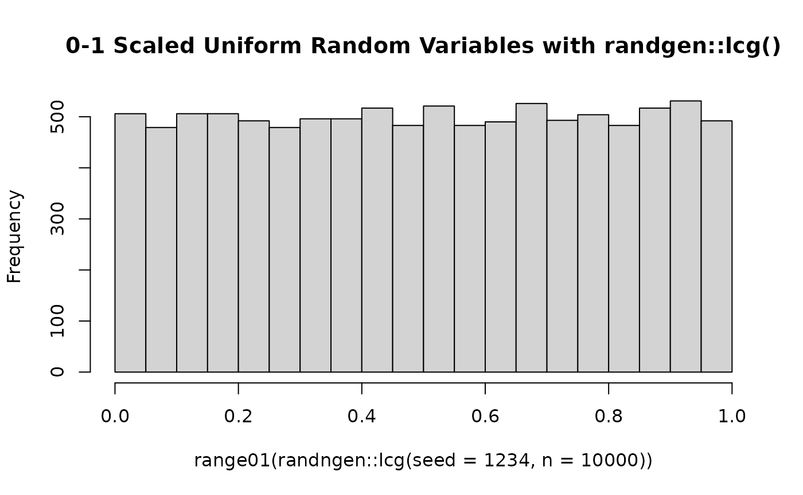
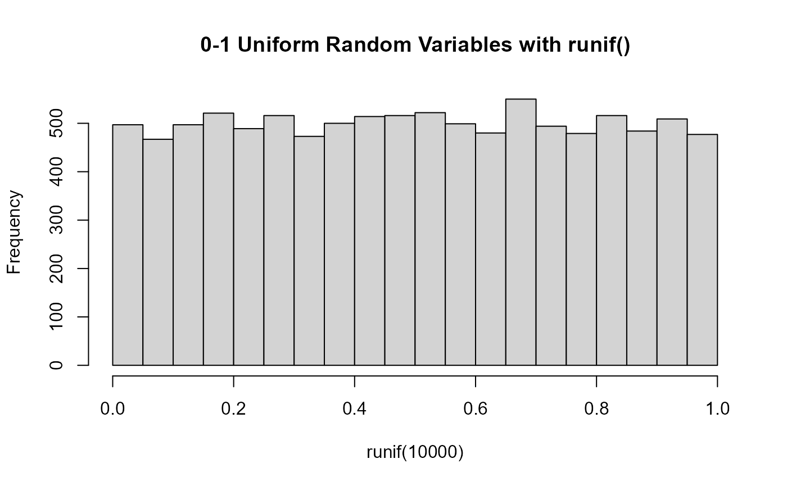
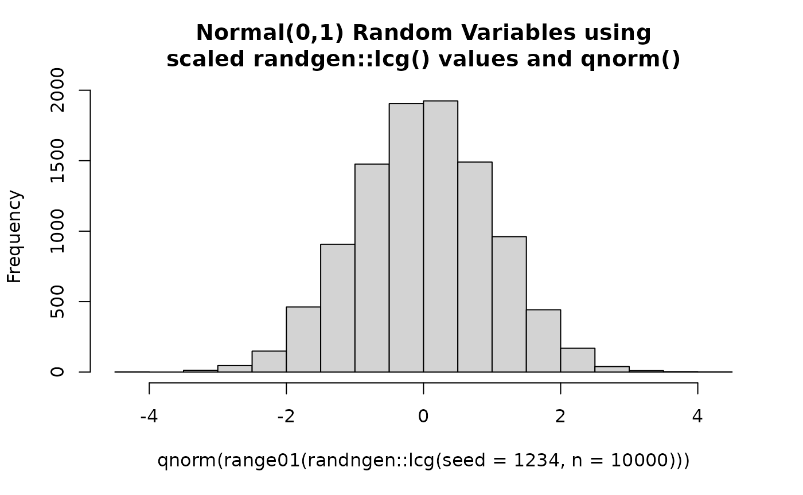
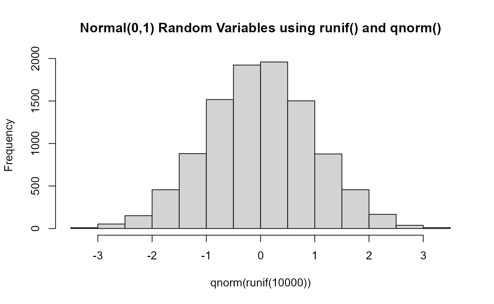

understanding-prngs.RmdPseudo-random number generators (PRNGs) power much of what goes on
“behind the scenes” in statistical and cryptographic settings. In
R, there is a pseudo-random number generator present which
allows users to generate random variables from a variety of
distributions. To check the default PRNG used by your R
version you can run the following:
# Using version 4.2.2 (at time of writing)
# Returns the methods used for
# 1. The "default" random number generation,
# 2. Normal variable generation
# 3. Discrete uniform variable generation
RNGkind()
#> [1] "Mersenne-Twister" "Inversion" "Rejection"The PRNG which R utilizes can be specified by specifying a
.Random.seed argument in the beginning of an R script or by
adjusting the default kind (and normal.kind
and sample.kind) arguments in the RNGkind or
set.seed argument.
While it is possible for one to utilize their own PRNG through use of
user-supplied random number generation, such an approach is
pedagogically complex. For users interested in working with and learning
about random number generation, present tools available still leave a
degree of complexity and/or mystery around how random numbers are
generated from the seed(s) and parameters supplied to a given PRNG. The
randngen package provides a suite of PRNGs to which aim to
be easy to use and flexible for understanding the relevant maths and
algorithms implemented by allowing users to specify all relevant
parameters.
library(randngen)
# Function from here: https://stackoverflow.com/questions/5468280/scale-a-series-between-two-points
range01 <- function(x){(x-min(x))/(max(x)-min(x))}
randngen::lcg(seed = 1234, n=10000)|>
range01()|>
hist(main= "0-1 Scaled Uniform Random Variables with randgen::lcg()")

library(randngen)
randngen::lcg(seed = 1234, n=10000)|>
range01()|>
qnorm()|>
hist(main= "Normal(0,1) Random Variables using\nscaled randgen::lcg() values and qnorm()")
set.seed(1234)
runif(10000)|>
qnorm()|>
hist(main= "Normal(0,1) Random Variables using runif() and qnorm()")
Disclaimer: This section was copied from output from Gemeni. I have not found information on this collected in one individual place. However I was told by ChatGPT that it “[…] is well-documented in R’s official NEWS files, which detail changes and new features introduced in each R version …”. If this information is misleading or false, please open an issue or submit a pull request with more accurate information. ## R’s History with PRNGs
R’s base distributions have steadily evolved their Pseudo-Random Number Generators (PRNGs) to prioritize longer periods, better equidistribution, and improved accuracy. Here is an accurate timeline of R’s PRNG infrastructure.
"Buggy Kinderman-Ramage". Other uniform alternatives
available at the time included Wichmann-Hill and
Super-Duper.RNGversion()
function, allowing users to explicitly request the algorithms used in
older versions of R.sample().xoshiro or
xoroshiro families. Users requiring these high-performance
algorithms must rely on external packages, such as
randngen, to bridge the gap between base R’s established
defaults and cutting-edge PRNG research.| R Version / Era | Default PRNG | Normal RNG | Key Updates & Notes |
|---|---|---|---|
| Before R 1.7.0 | Marsaglia-Multicarry | Kinderman-Ramage | Legacy methods preserved via
"Buggy Kinderman-Ramage"
|
| R 1.7.0 Series | Mersenne Twister | Inversion | MT19937 becomes the standard; RNGversion()
introduced |
| Later Additions | Mersenne Twister | Inversion | L’Ecuyer-CMRG added for parallel processing and independent streams |
| R 3.6.0 | Mersenne Twister | Inversion | Modulo-based discrete sampling replaced with rejection sampling in
sample()
|
| R 4.x (Current) | Mersenne Twister | Inversion | Relies on external packages like randngen for
xoshiro variants |
R allows explicit control of the RNG type and seed via
RNGkind() and set.seed(), respectively,
ensuring reproducibility even as PRNG options expand.
Random function - RDocumentation. https://www.rdocumentation.org/packages/base/versions/3.6.2/topics/Random.
Morris, T. P., White, I. R. & Crowther, M. J. Using simulation studies to evaluate statistical methods. Statistics in Medicine 38, 2074–2102 (2019).
Generating distributions from random number generators. Cross Validated https://stats.stackexchange.com/questions/637706/generating-distributions-from-random-number-generators.
L’Ecuyer, P. & Simard, R. TestU01. ACM Transactions on Mathematical Software 33, 1–40 (2007).
R Core Team. R News Files. https://cran.r-project.org/doc/manuals/r-release/